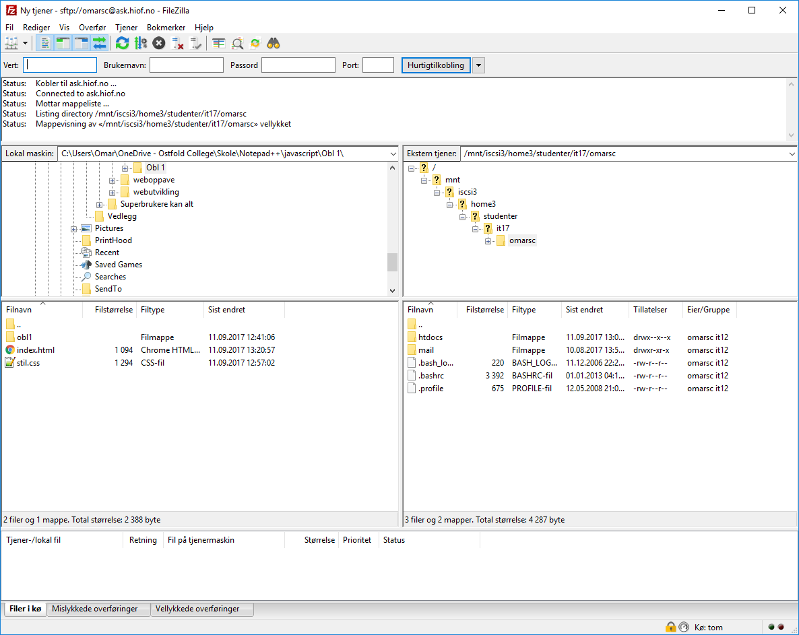

File Transfer Protocol
Hva er en FTP?
En FTP brukes til å overføre pc filer mellom en klient og en server på en pc nettverk. (Wikipedia, 2017) For å koble seg på en server ved hjelp av en FTP klient. Pleier man å logge seg på med sitt brukernavn og passord som serveren kjenner igjen. Det er mulig å logge seg på anonymt om serveren tillater det.
Her kan vi se et program som heter filezilla. Her kan vi laste opp filer fra pc-en og opp til serveren filezilla er koblet til. I dette tilfelle er programmet koblet til ask serveren som styres av Høgskolen i Østfold. På venstre side av programmet er det filer fra din PC og til høyre er det filer på serveren. For å laste opp nettsiden fra pc-en, markerer man alle filene fra venstre side, høyreklikker på filene og trykker last opp. Da vil alle filene automatisk lastes opp på serveren. Deretter kan man søke på nettsiden via en nettleser
Referanser/Kilder
Wikipedia.(2017) File Transfer Protocol. hentet fra https://en.wikipedia.org/wiki/File_Transfer_Protocol